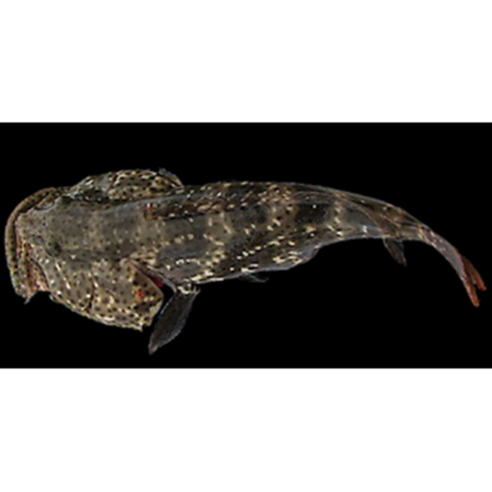

Ikan Kerapu Muara
Ikan Kerapu Muara The orange-spotted grouper adalah ikan kerapu yang menghuni perairan Indo-Pasifik dan Laut Merah. Salah satu spesies ikan yang terancam punah ini hidup nyaman di perairan dekat pantai seperti hutan mangrove (hutan bakau), laut dangkal, terumbu karang, muara/estuarium, pantai pasang surut dan laguna berair asin, termasuk air payau.
Kandungan Ikan Kerapu Muara
| Protein (%) | Kalori (Kal) | Lemak (%) | Besi (mg) | Kalsium (mg) | Fosfor (mg) | Vit A (SI) | Vit B1 (mg) | Air (%) | BDD (%) |
|---|---|---|---|---|---|---|---|---|---|
| 32,4 | - | 1,2 | 6 | 320 | 343 | - | 0,01 | - | - |
Manfaat Ikan Kerapu Muara
- Mempercepat Penyembuhan Luka
- Mendehidrasi Tubuh
- Penambah Tenaga
- Mencerdaskan otak
- Menyehatkan Kulit dan Rambut
- Meningkatkan Selera Makan
- Baik untuk Sistem Pencernaan
Di dalam ikan belanak, ternyata mengandung protein yang lumayan tinggi. Dan oleh karenanya ikan ini bisa bermanfaat dalam mempercepat proses penyembuhan pada luka. Karena kandungan protein yang ada pada ikan belanak membantu dalam proses regerenerasi sel – sel yang ada dalam tubuh kita, sehingga luka yang ada dapat menutup dengan cepat.
Jika Anda memiliki aktivitas yang padat setiap hari, tentunya sangat wajar jika anda merasa cepat haus. Dan oleh karenanya sangat di sarankan, jika anda mengkonsumsi air putih yang cukup. Dan selain banyak mengkonsumsi air, buat anda yang memiliki aktivitas berat sangat di sarankan untuk banyak mengkonsumsi ikan belanak. Karena kandungan gizi pada ikan yang menyerupai bandeng ini mampu mendehidrasi tubuh kita agar bisa terhindar dari dehidrasi/kekurangan cairan. Bahkan biasanya para atlit pun juga di sarankan untuk memasukkan bernama lain blue-spot mullet dalam daftar menu hariannya.
Untuk bisa beraktivitas, tubuh kita memerlukan asupan karbohidrat yang cukup sebagai sumber tenaga. Nah, ternyata ikan bernama lain blue-tail mullet juga mengadung banyak karbohidrat yang bisa Anda jadikan sebagai alternatif menu sarapan untuk memulai segala aktivitas. Dan tentunya, karbohidrat juga sangat penting dalam proses metabolisme tubuh kita. Jadi, mulai sekarang tak ada salahnya menjadikan ikan ini sebagai pilihan untuk memperbiki gizi Anda.
Proses tumbuh kembang sang buah hati tentu menjadi fokus utama setiap orang tua, termasuk perkembangan otak anak. Bagi Anda para orang tua, alangkah baiknya jika anak rutin memberikan olahan ikan belanak kepada buah hati anda. Selain kaya akan proteinnya, kandungan ikan belanak juga mampu meningkatkan kecerdasan otak serta konsentrasi anak.
Ternyata di dalam ikan belanak, mengandung zat asam lemak yang sangat baik untuk menjaga kesehatan kulit. Bagi Anda yang sedang menjalani perawatan kulit, Anda bisa menambahkan menu ikan belanak ini guna menutrisi kulit anda. Karena, kandungan dalam ikan belanak di yakini berkhasiat menjaga kulit tetap sehat dan menghindarkannya dari kekeringan dan mengelupas.
Bagi Anda yang sedang kurang enak badan sehingga mempengaruhi selera makan Anda, tidak ada salahnya untuk mencicipi ikan belanak ini. Rasa dari ikan belanak yang sangat lezat tentunya bisa mampu meningkatkan selera makan Anda. Untuk mengolah ikan belanak ini bisa di lakukan dengan berbagai pilihan cara. Namun, karena alasan banyak duri – duri kecil pada dagingnya, kebanyakan orang memilih untuk mengolahnya dengan cara dipepes.
Kandungan sehat yang ada pada ikan belanak ini ternyata juga sangat ampuh untuk mencegah sembelit atau susah buang air besar. Oleh karenanya buat anda yang saat ini mengeluhkan susah buang air besar atau BAB tidak lancar, sangat di anjurkan untuk banyak-banyak mengkonsumsi ikan ini.